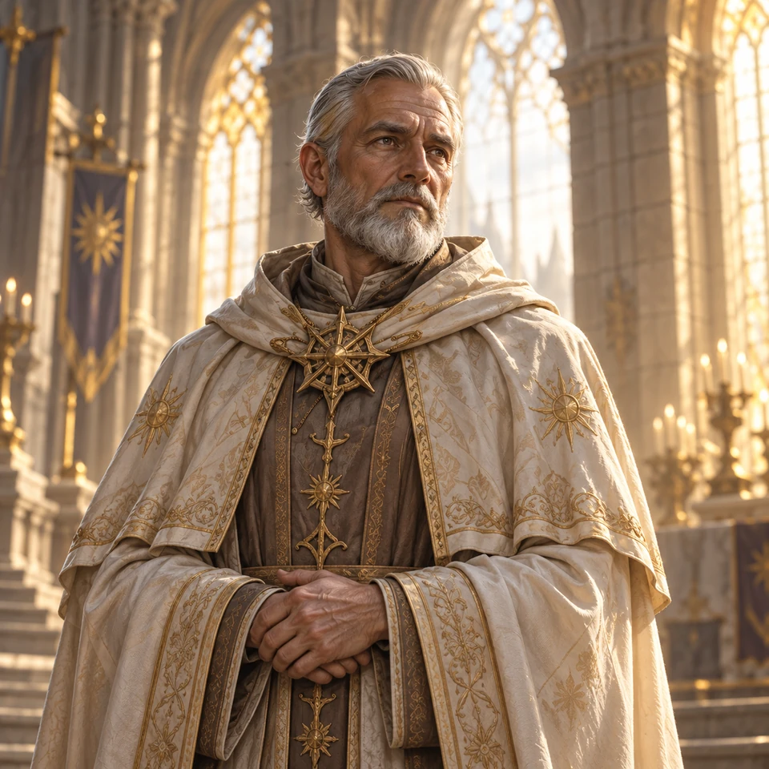

Brother Alden
Description
A steadfast priest protecting a secret beneath his quiet chapel.
At the table
Speaks gently and pauses before answering direct questions.
Adventure hook
The chapel bells ring each midnight, though no one pulls the ropes.

A steadfast priest protecting a secret beneath his quiet chapel.
Speaks gently and pauses before answering direct questions.
The chapel bells ring each midnight, though no one pulls the ropes.